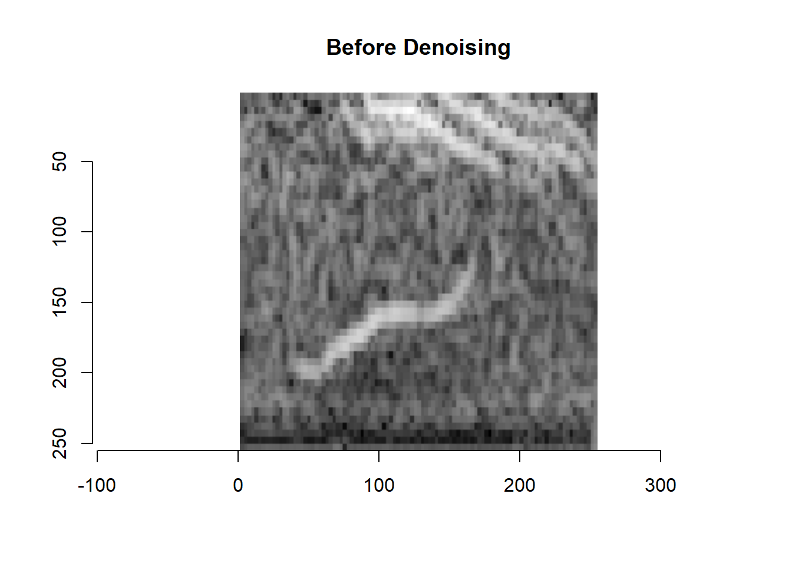
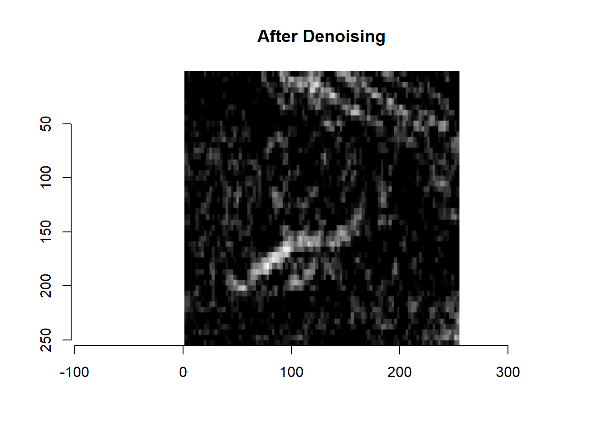
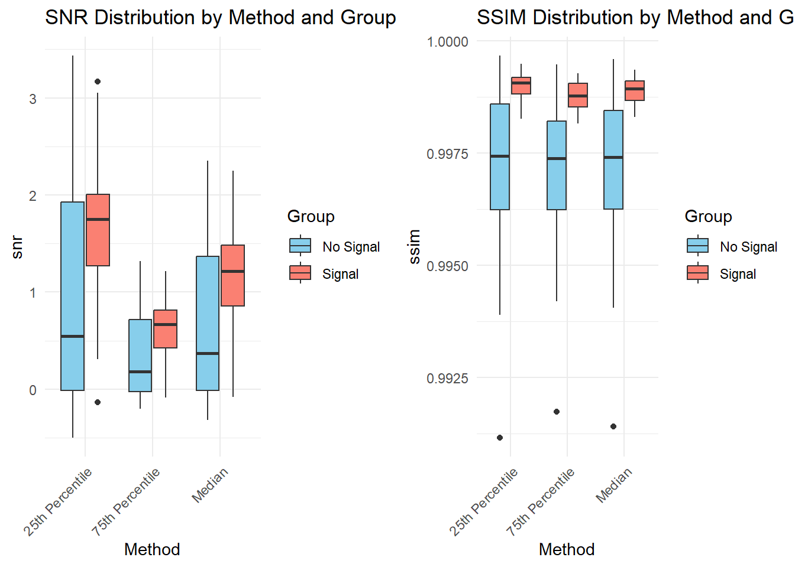

Below we present the application and analysis of our denoising algorithm on a smaller subset of the isolated dataset described in the data section of our write-up. We settled on 30 observations from each of the two labels, with 60 total in the subset for size limitations and purposes.
3.0.0.1 The Idea
Intuitively, our algorithm that we present below is isolating the signal components that are used to construct the original data matrix and denoising these signal components separately. Only then, do we reconstruct the original data matrix and conduct a standard column-wise median denoising. This way, any time-periodic fully invasive interference can be handled in an isolated fashion so as to preserve signal shape while providing a competent level of denoising.
3.0.0.2 The Algorithm
We approach the denoising process as follows:
The denoising algorithm implemented in this analysis combines Principal Component Analysis (PCA) with a novel column-wise thresholding technique. The process can be broken down into several key steps.
3.0.0.2.1 1. Initial Decomposition
We apply PCAA through Singular Value Decomposition to decompose the image matrix. Said decomposition yields three matrices, of which we are primarily concerned with the right-most containing the singular codomain vectors. The transpose of this matrix, call it V, represents the “building blocks” of our images. More specifically, the rows of \(V^T\) can be reshapedd into the n = 2 dimensional singular basis vectors used to reconstruct our original dataset.
3.0.0.2.2 2. Column-wise Thresholding
For each principal component image (rows of \(V^T\)), our algorithm:
Reshapes the flattened vector into a 255 x 255 matrix (representative of it’s image vector form)
Processes each column independently
Applies one of three thresholding approaches (median subtraction, 25th percentile subtraction, and 75th percentile subtraction)
Any negative values resulting from the subtraction are set to 0. Then the processed matrix is flattened back into a row vector of the matrix \(V^T\).
3.0.0.2.3 3. Image Reconstruction
The processed \(V^T\) matrix is used with the other 2 original matrices to reconstruct the original dataset. This reconstruction maintains the global structure while incorporating the denoising effects. Then we apply a final median value column-wise subtraction to the reconstructed images.
Below we provide an example of an image with a whale call signal before and after our denoising method (in particular, an iteration of a denoising path using median singular component thresholding).
# Function to process a single 255x255 matrixprocess_matrix <-function(flat_vector, percentile_func) {# Reshape to 255x255 img_matrix <-matrix(flat_vector, nrow=255, ncol=255)# Process each columnfor(j in1:255) { thresh_val <-percentile_func(img_matrix[,j])# Subtract threshold value and cap at 0 img_matrix[,j] <-pmax(img_matrix[,j] - thresh_val, 0) }# Return flattened processed matrixreturn(as.vector(img_matrix))}# Apply to each row of pc_imagesprocessed_pc_images_median <-matrix(0, nrow=60, ncol=65025)processed_pc_images_25th <-matrix(0, nrow=60, ncol=65025)processed_pc_images_75th <-matrix(0, nrow=60, ncol=65025)for(i in1:60) { processed_pc_images_median[i,] <-process_matrix(pc_images[i,], median) processed_pc_images_25th[i,] <-process_matrix(pc_images[i,], function(x) quantile(x, 0.25)) processed_pc_images_75th[i,] <-process_matrix(pc_images[i,], function(x) quantile(x, 0.75))}reconstruction_median <- svd_result$u %*% D_matrix %*% processed_pc_images_medianreconstruction_25th <- svd_result$u %*% D_matrix %*% processed_pc_images_25threconstruction_75th <- svd_result$u %*% D_matrix %*% processed_pc_images_75th# Function to apply median subtraction to a matrixapply_median_subtraction <-function(flat_matrix) {# Reshape each row to 255x255, process, and flatten back processed_matrix <-matrix(0, nrow=nrow(flat_matrix), ncol=ncol(flat_matrix))for(i in1:nrow(flat_matrix)) {# Reshape to 255x255 img_matrix <-matrix(flat_matrix[i,], nrow=255, ncol=255)# Process each columnfor(j in1:255) { col_median <-median(img_matrix[,j])# Subtract median and cap at 0 img_matrix[,j] <-pmax(img_matrix[,j] - col_median, 0) }# Flatten and store processed_matrix[i,] <-as.vector(img_matrix) }return(processed_matrix)}# Apply to each reconstructionfinal_median <-apply_median_subtraction(reconstruction_median)final_25th <-apply_median_subtraction(reconstruction_25th)final_75th <-apply_median_subtraction(reconstruction_75th)
Code
image_width =255image_height =255first_image_vector <- reconstruction[31, ]first_image_matrix <-matrix(first_image_vector, nrow = image_width, ncol = image_height, byrow =FALSE)first_image_cimg <-as.cimg(first_image_matrix)# Display the corrected first imageplot(first_image_cimg, main ="Before Denoising")

Code
first_image_vector <- final_median[31, ]first_image_matrix <-matrix(first_image_vector, nrow = image_width, ncol = image_height, byrow =FALSE)first_image_cimg <-as.cimg(first_image_matrix)# Display the corrected first imageplot(first_image_cimg, main ="After Denoising")

As we can see, to the human eye, the signal appears to be more isolated and in a cleaner, noiseless environment. However, we seek to analyze the performance of our denoising algorithm iterations objectively and compare them. Therefore we require an objective measurement for spectrogram image quality post processing, and to this end we use the traditional Signal-to-Noise ratio and Structural Similarity Index Measure metrics to gauge performance.
\[
P_{\text{noise}} = \frac{1}{N}\sum_{i=1}^{N} (x_i - y_i)^2
\] Intuitively, SNR measures how much signal dominates over the background noise in an image. A higher SNR value generally means a signal is more prominent and distinguishable from the noise in the background, and therefore the denoising algorithm had a higher efficacy.
Structural Similarity Index Measure (SSIM) is calculated to be
SSIM measures how similar two images are in terms of their structure rather than just pixel by pixel differences. In order to ensure we preserve as much relevant signal structure as possible in the new image using our algorithm, we use this metric to gauge the proportion of the original structure preserved (values range from 0 to 1 where 1 is near perfect structure preservation).
These two metrics are calculated for each observation across all three methods and stored in separate dataframes for the purposes of exploring the state of the data as well as the performance of our algorithm below.
3.0.0.3 Performance Analysis
We first graph histograms of the SNR and SSIM for each of the three thresholding intensities to observe the distribution of the data post hoc.
As we can see, all three methods tend to display the potential presence of two subpopulations in the data when SNR is calculated while the SSIM values gauging signal preservation seem relatively unimodal and consistent between the three methods. We suspected the bimodal nature of the SNR distributions for all strengths to be attributed to the labels in the data (whether an image contains a signal or not) and therefore overlayed new histograms to observe if grouping by label would procure a suggested answer for what is causing this shape. Note that in our data matrix, by our preprocessing methods, the FIRST 30 observations had no signal (label = 0) and the LAST 30 observations contained a signal (label = 1).
As we can see, it is at least virtually clear that the distribution for signal-containing images across all denoising intensities procured a shape with higher SNR center value than that of the images with no signals. This, while we have not yet tested statistically for certain whether the difference is significant, makes sense because our SNR calculation procures values of near 0 for multiple reasons, one of which being that there is no high intensity pixel value in the post-hoc image to inflate the numerator of the calculation. Judging by our SSIM distributions for all three intensities, since the data tends extremely towards 1, we can say that the structural integrity of our signals is fairly well preserved on an objective level. We draw similar conclusions based on the boxplots given below.
Code
# Function to prepare dataprepare_data <-function(df, method_name) { df$Method <- method_name df$Group <-ifelse(df$image_index <=30, "No Signal", "Signal")return(df)}# Combine all dataall_data <-rbind(prepare_data(metrics_median, "Median"),prepare_data(metrics_25th, "25th Percentile"),prepare_data(metrics_75th, "75th Percentile"))# Create SNR boxplotp1 <-ggplot(all_data, aes(x=Method, y=snr, fill=Group)) +geom_boxplot() +ggtitle("SNR Distribution by Method and Group") +theme_minimal() +scale_fill_manual(values=c("No Signal"="skyblue", "Signal"="salmon")) +theme(axis.text.x =element_text(angle =45, hjust =1))# Create SSIM boxplotp2 <-ggplot(all_data, aes(x=Method, y=ssim, fill=Group)) +geom_boxplot() +ggtitle("SSIM Distribution by Method and Group") +theme_minimal() +scale_fill_manual(values=c("No Signal"="skyblue", "Signal"="salmon")) +theme(axis.text.x =element_text(angle =45, hjust =1))# Arrange plotsgrid.arrange(p1, p2, ncol=2)

Next, observe the results of difference in mean hypothesis tests for the signal vs no-signal distribution centers across all three intensities. In every case, we reject the null that there is no significant difference between signal containing images and their anitheses observations. Further, we conduct an ANOVA test to determine the presence of a difference in performance between the denoising intensities. We find that the SNR calculations are significantly different between all 3 methods but SSIM is generally indistinguishable on average. More specifically, the 25th percentile intensity appears to be more objectively powerful at creating a distinguishing barrier between signal and noise in an image.
Code
# T-tests for Signal vs No Signal in each method# For Median methodt_med_snr <-t.test(snr ~ Group, data=subset(all_data, Method=="Median"))t_med_ssim <-t.test(ssim ~ Group, data=subset(all_data, Method=="Median"))# For 25th Percentilet_25_snr <-t.test(snr ~ Group, data=subset(all_data, Method=="25th Percentile"))t_25_ssim <-t.test(ssim ~ Group, data=subset(all_data, Method=="25th Percentile"))# For 75th Percentilet_75_snr <-t.test(snr ~ Group, data=subset(all_data, Method=="75th Percentile"))t_75_ssim <-t.test(ssim ~ Group, data=subset(all_data, Method=="75th Percentile"))# ANOVA to compare methodssnr_anova <-aov(snr ~ Method, data=all_data)ssim_anova <-aov(ssim ~ Method, data=all_data)# Print resultscat("T-test results for Signal vs No Signal:\n\n")
Df Sum Sq Mean Sq F value Pr(>F)
Method 2 20.04 10.021 17.93 8.1e-08 ***
Residuals 177 98.91 0.559
---
Signif. codes: 0 '***' 0.001 '**' 0.01 '*' 0.05 '.' 0.1 ' ' 1
Code
cat("\nSSIM: ")
SSIM:
Code
summary(ssim_anova)
Df Sum Sq Mean Sq F value Pr(>F)
Method 2 6.00e-07 3.188e-07 0.135 0.874
Residuals 177 4.18e-04 2.362e-06
One more interesting visualization we offer is a scatter plot (for each percentile method) comparing the values of the calculated SNR vs the SSIM. Observe that there is a positive correlation between SNR and SSIM up to a certain threshold after which there is a logistic leveling effect. Signal groups tend to cluster in the upper-right quadrant of the graph region (high SNR, high SSIM) whereas no signal groups show more variability / dispersion in both metrics.
Code
# Create scatter plots for each percentile methodp1 <-ggplot() +geom_point(data=metrics_median, aes(x=snr, y=ssim, color=ifelse(image_index <=30, "No Signal", "Signal")), size=3, alpha=0.6) +ggtitle("Median: SNR vs SSIM") +scale_color_manual(values=c("No Signal"="skyblue", "Signal"="salmon")) +theme_minimal() +labs(color="Group")p2 <-ggplot() +geom_point(data=metrics_25th, aes(x=snr, y=ssim, color=ifelse(image_index <=30, "No Signal", "Signal")), size=3, alpha=0.6) +ggtitle("25th Percentile: SNR vs SSIM") +scale_color_manual(values=c("No Signal"="skyblue", "Signal"="salmon")) +theme_minimal() +labs(color="Group")p3 <-ggplot() +geom_point(data=metrics_75th, aes(x=snr, y=ssim, color=ifelse(image_index <=30, "No Signal", "Signal")), size=3, alpha=0.6) +ggtitle("75th Percentile: SNR vs SSIM") +scale_color_manual(values=c("No Signal"="skyblue", "Signal"="salmon")) +theme_minimal() +labs(color="Group")# Arrange plotsgrid.arrange(p1, p2, p3, ncol=2)